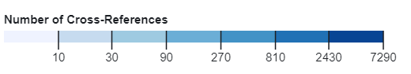

Similar themes, words, events, or people appear across the bible. Cross-references between these for the sake of this project are considered links with each of the chapters being nodes. There are roughly 63,000 links in this data set.
These visualizations were the inspiration for the exploration of biblical cross-references for this assignment. Specifically, I admired the visuals and wanted to try and display the same or similar data in a better and more interactive way. By navigating to this link, you can also find and download the cross-references raw data. If you want to see how I parsed the data and created these visuals, please navigate to my observable notebook.
My hypothesis is the most popular type of cross reference will be between the old and new testament as opposed to within each (undirected).
